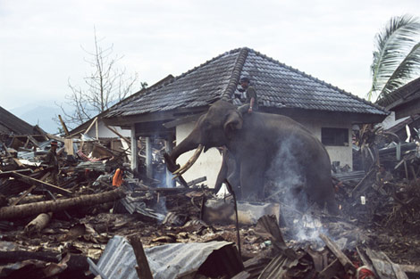

Bencana dan musibah
 Dari Dewi:
Dari Dewi:
Indonesia sering dilanda bencana alam. Sebagian dikarenakan letak Indonesia di lempeng tektonik, misalnya gempa bumi, ledakan gunung api, dan ombak besar (alias tsunami).
Letak kepulauan Indonesia di khatulistiwa juga menyebabkan bencana alam lain, akibat dari cuaca tropis, misalnya banjir dan tanah longsor.
Selain itu, sering terjadi musibah lain di Indonesia, mengakibatkan bertambahnya taraf kemiskinan rakyat Indonesia. Infrastruktur (misalnya jaringan transportasi) kurang baik kalau dibandingkan dengan yang ada di negara yang sudah berkembang. Sering terjadi kecelakaan di bidang transportasi, misalnya kapal yang tenggelam, atau kecelakaan kereta api atau pesawat terbang. Dapat dikatakan juga bawah kesadaran terhadap kesehatan, kenyamanan dan keselamatan kerja agak kurang diperhatikan, jika dibandingkan dengan Australia dan negeri Barat yang lain, sehingga masih banyak kecelakaan yang terjadi.

Reproduced with the permission of Jack Picone and AusAID |
Pada saat terjadi bencana alam, Australia biasanya cepat mengulurkan tangan kepada Indonesia, dalam bentuk dana dan petugas yang berpengalaman. Misalnya sewaktu terjadi gempa bumi besar di Yogyakarta, Australia mengirimkan petugas dari State Emergency Services, dokter dan petugas lain untuk ikut membantu.
|  |
| Reproduced with the permission of Rob Walker and AusAID |
Komentar

Re: Bencana dan musibah dari IndoGuRu pada jam 18:55.
- Mengapa Indonesia dilanda begitu banyak bencana dan musibah? Apakah Anda setuju dengan apa yang ditulis Dewi? Tulislah pendapat Anda dalam kira-kira 50 kata.
- Terus, bandingkanlah Indonesia dengan Australia. Sebutkanlah perbedaan antara kedua negara ini seperti yang disiratkan dalam tulisan Dewi.
Save dalam Word document di file yang sesuai.